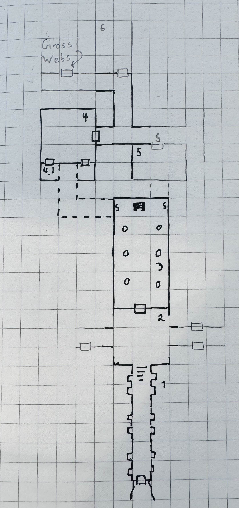

Shadow of the Unknown
Table of Contents
- 1. Background
- 2. Party Turn Order:
- 3. Group Inventory Spreadsheet
- 4. Current Map:
- 5. Current Round 24:
- 6. Round 23:
- 7. Round 22
- 8. Round 21
- 9. Round 20
- 10. Round 19
- 11. Round 18
- 12. Round 17
- 13. Round 16
- 14. Round 15
- 15. Round 14
- 16. Round 13
- 17. Round 12
- 18. Round 11
- 19. Round 10: Zelligar’s Bedroom (Room 4)
- 20. Round 9
- 21. Round 8
- 22. Round 7
- 23. Round 6:
- 24. Round 5: Throne room, Room 3
- 25. Round 4: Entry Hall, Room 2
- 26. Round 3
- 27. Round 2: Hallway, Room 1
- 28. Round 1:
1. Background
Word has recently reached your area that two of the area’s adventurers, the Warlord Rogahn the Fearless, and the Sorcerer Zelligar the Unknown, have been killed while on campaign in a distant land, fighting barbarian hordes. They left on their campaign several years ago, but news of their death has only just filtered back to this area.
These adventurers gained their reputation by repelling a barbarian invasion of these lands many years ago. Rogahn slew a horde singlehandedly, and Zelligar’s magic put the army to flight.
The other thing that they are known for is for having invested most of their treasure into their stronghold, a hidden complex, far from any well-travelled route.
With the news of their death, people began combing the countryside for signs of their stronghold. You seem to have found something…
2. Party Turn Order:
3. Group Inventory Spreadsheet
4. Current Map:

5. Current Round 24:
- Torch timer: 5 (Adel is holding it)
- Adel finishes putting on chainmail armor, drops leather armor and garlic he picked up
- A gust of wind blows through the room, from the one open door to the other. Adel failed a DEX check and the torch goes out. We are in darkness
- Mubslai pulls out a daggar, but fails his light spell
- Bragi lights a torch from his bag
6. Round 23:
- Torch timer: 6 (Adel is holding it)
- Adel strips the chainmail armor off the fourth body
- Mubslai waits for the party to ready
- Bragi waits for the party
- Nires swaps his bow for a spear. Opens the doorway to the hall a crack and listens
- Brugh finishes putting on the chainmail and takes the silver comb from Finol
- Finol opens the door the orcs came through
7. Round 22
- Torch timer: 7 (Adel)
- Adel heals Brugh
- Mubslai opens the door the Orcs came out of, but it’s locked
- Bragi heads over to the door with Mubslai and puts on the armor he looted
- Nires puts on the armor he looted
- Brugh strips chainmail off an orc
- Finol searches the door thoroughly and finds nothing
8. Round 21
- Torch timer: 8 (Adel)
- Adel revives Brugh with Cure Wounds
- Bragi strips chainmail armor off the Orc leader and a 45 gp silver mirror (1 XP)
- Nires strips off chainmail armor from a dead Orc and 2 perfume bottles. Swaps training shield for an Orc’s shield
- Brugh closes all the doors
- Finol searches the remaining orc and finds a silver-plated comb
9. Round 20
- Torch timer: 9 (Finol)
- Adel leaves the bedroom and re-enters the hallway
- Orcs (1 leader 3 others) come out from an (un-searched) tapestry
- Some back and forth dialog with the Orcs telling us to give them our treasure
9.1. Combat Round 20.1
- Brugh attacks and misses the Orc leader
- Finol tries and fails to hide
- Adel steps just inside the doorway and fires and misses the Orc leader
- Orc leader misses Brugh
- Orc 2 misses Brugh
- Orc 3 knocks Finol out, but the torch doesn’t go out
- Orc 4 misses Adel
- Mubslai splashes acid on Orc 4 but misses
- Bragi kills Orc 3
- Nires shoots the Orc leader with an arrow
9.2. Combat Round 20.2
- Brugh misses Orc leader
- Finol has 1 round left to live
- Adel moves close to Finol and cast Cure Wounds reviving Finol with a bit of luck
- Picks up the torch
- Orc leader rages and attacks Brugh and misses
- Orc 2 attacks Bragi and knocks him out
- Orc 4 knocks Mubslai down
9.3. Combat Round 20.3
- Brugh attacks an orc and misses
- Finol tries to stabalize Mubslai, but fails
- Adel moves over to Mubslai and casts Cure Wounds reviving Mubslai
- Orc leader misses Nires
- Orc misses Finol
- Orc hits and almost knocks Brugh out
- Mubslai double crits with Magic Missle and kills one of the Orcs
- Nires moves away from Orc and kills the Orc with an arrow
9.4. Combat Round 20.4
- Brugh misses the remaining Orc
- Finol shoots the Orc leader with a shortbow
- Adel moves over to Bragi and revives him with Cure Wounds
- Orc leader knocks Brugh down
- Mubslai kills the remaining Orc leader with Magic Missle
- Bragi tries to stablize Brugh but fails
- Nires manages to stabalize Brugh
10. Round 19
- Torch timer: 10 (Finol)
- Adel casts light and fails. Waits outside the bedroom
- Mubslai checks out the gem Brugh found. It’s not enchanted, but it has been “tainted” by a dragon’s hoard. It “wants” to return to the dragon’s hoard.
- Bragi tries and fails to open the secret door. Joins Adel and waits
- Nires kicks the secret door open and it loudly bangs into the wall in the throne room
- Brugh moves towards the door to leave the bedroom
11. Round 18
- Torch timer: 2 (Nires and Bragi)
- Adel waits for Finol and Nires to catch up
- Bragi moves out of the bedroom into the hall
- Nires rejoins the others
- Brugh lights a torch and then examines the new secret door
- Finol catches up to the group, takes Brugh’s torch and checks for traps
12. Round 17
- Torch timer: 3 (Nires and Bragi)
- map
- Adel searches the armoire and finds nothing of value
- Mubslai finds a secret door behind one of the tapestries
- Bragi finds a wooden box with a dragon on it and a big green gem (1 XP)
- Nires keeps one of the training shields from the gym and 20 usable arrows and heads back towards the rest of the party
- Brugh searches behind another tapestry and finds an empty armor rack
- Finol follows Nires to catch up with the group
{kind=link}
13. Round 16
- Torch timer: 4 (Nires and Bragi)
- Adel searches the alcove and finds a (stuck) secret door (Room 5)
- Mubslai tries to disolve the spider webs with acid. It works, but would take a
long time to clear it all
- Mage Armor: 1
- Bragi examines the secret door
- Nires opens a doorway near the webs and finds a gym (Room 6)
- Brugh forces the door in the alcove to reveal Rogahn’s Bedroom
- Finol loots a few arrows from the gym
14. Round 15
- Torch timer: 5 (Nires and Bragi)
- Adel sneaks down the other hallway away from the stink and finds an alcove
- Mubslai catches up to the intersection
- Bragi follows Adel to reveal more of the hallway
- Nires double-moves out to the intersection and follows group towards stinky hall
- Brugh double-moves to the alcove with Bragi and Adel
- Finol sneaks down the stinky hallway and finds heavy spider webs
15. Round 14
- Torch timer: 5 (Nires and Bragi)
- Adel waits in the bedroom
- Mubslai waits in the bedroom
- Mage Armor: 3
- Bragi leaves the bedroom and enters the outside hall. Hand returns to normal
- Nires tries to figure out the treasure illusion and it just disappears. Grabs the iron spike
- Brugh takes iron spike from Nires. Scouts head and finds stinky hallway
- Finol sneaks as far down the stinky hall as he can with the light
- map
{kind=link}
16. Round 13
- Torch timer: 7 (sconce and Bragi)
- Adel searches the closet
- Mubslai enters the closet and searches through the papers
- Mage Armor: 4
- Bragi also searches the closet
- Nires opens the other door, takes the torch from the sconce and sees (fake) treasure
- Brugh tosses an iron spike at the treasure
- Finol checks for traps on the remaining door
17. Round 12
- Torch timer: 8 (sconce and Bragi)
- Adel examines Bragi’s hand and searches the room
- Mubslai picks up the black bone
- when held touching one of the etchings, the bone will slowly fill up with acid. This acid can be flung at “nearby” opponents for 1d6 damage.
- You can invoke the power once to shoot a more powerful bolt of acid which shoots further and lasts longer. Doing this will deplete the item of its magic.
- The magic is diabolical in nature, and the bearer of the bone is vulnerable to silver weapons.
- Mage Armor: 5
- Bragi attempts to open one of the (locked) doors
- Brugh forces open a closet/office, finds a lantern (without oil)
- Finol further searches the bedroom
18. Round 11
- Torch timer: 9 (Nires and Bragi)
- Adel moves into the room and inspects the carvings on the wall
- Mubslai tries to find the source of the chanting, but it seems to have stopped
- Bragi searches around the bed and nightstand. He opens the drawer on the nightstand and is poisoned by a needle trap! His hand is numb and unusable
- Nires puts his torch in a sconce and searches the room, but finds nothing
- Brugh find black bone in the drawer
- Finol closes the door and examines the black bone and the trap in the drawer
19. Round 10: Zelligar’s Bedroom (Room 4)
- Torch timer: 10 (Nires)
- Adel casts light on Bragi’s shield. Catches up with Mubslai and Nires
- Mubslai hears diabolic singing and waits
- Bragi double-moves up to the doors
- Nires checks for traps and opens the door to reveal a bedroom
- Bragi enters the room, can’t find source of chanting
- Finol double-moves to catch up to the group without entering the room
20. Round 9
- Torch timer: 2 (Mubslai and Brugh)
- Adel follows Nires
- Mubslai moves further down the hallway with Nires
- Mage Armor: 7
- Bragi moves up with Nires
- Nires lights a new torch and move down the hallway
- Brugh hands his sputtering torch to Finol and double-moves to the rest of the party
- Finol follows the group and his torch goes out
21. Round 8
- Torch timer: 3 (Mubslai and Brugh)
- Adel checks for traps on second trap door and waits for Finol
- Mubslai takes second gem from Finol and waits
- Mage Armor: 8
- Bragi moves to throne and waits
- Nires listens and pushes open the first secret door to reveal a hallway. He
moves down the hallway with spear as far as light allows
- hears singing/chanting in the distance
- Brugh moves up to the throne with light
- Finol pops the third 50g gem
22. Round 7
- Torch timer: 4 (Mubslai and Brugh)
- Adel finds a second secret door behind curtains
- Mubslai waits to loot the other gems
- Mage Armor timer: 9
- Bragi stands guard
- Nires waits for Finol to loot gems
- Brugh moves to back of throne room and waits
- Finol pops another 50gp gem
23. Round 6:
- Torch timer: 5 (Finol and Brugh are holding)
- Finol gets spooked, gives torch to Mubslai, hides
- Adel hides
- Swarm of several large rats coming out in the entry hall
- Brugh rushes into the throne room and closes the door
23.1. Combat Round 6.1:
- One rat gets into the throne room
- Finol shots the rat with his bow
- Adel fires crossbow to kill the rat and reloads
- Mubslai casts Mage Armor
- Bragi moves up to the doors
- Niles equips longbow, ready for attack
23.2. Combat Round 6.2:
- Brugh fits iron spike to wedge the door
- Finol recovers a gem from the throne, 50gp gem, 1 XP
- Nires finds a secret door behind the curtains
- Adel searches behind curtains
- Rat sneaks in and bites Bragi
- Mubslai Magic Missles a Rat
- Bragi kills the rat with a axe
- Rats seemed to have left on the other side of the door
24. Round 5: Throne room, Room 3
- Torch timer: 6 (Finol, and Brugh are holding one)
- map
- Finol steps into the “ballroom” and approaches the “altar”
- It’s actually a throne room and these are thrones
- Adel moves into the room
- Mubslai moves up to the thrones
- Sees 4 unbroken, large gems on the thrones
- breaks one of the gems with a crowbar
- Bragi examines the curtains at the back of the room
- Finol double-moves towards the back of the room
- Brugh double-moves into the throne room
{kind=link}
25. Round 4: Entry Hall, Room 2
- Torch timer: 7 (Finol is holding it)
- Finol searches big door for traps and listens, but finds nothing
- Adel searches the wizard’s corpse, finds 2gp and garlic
- Mubslai returns to the group and opens the big door to reveal a ball room. Moves into the room.
- Bragi moves into the ballroom
- Nires moves up and stays just outside the ballroom
- Brugh (lights torch) double-moves to catch up (in the hallway outside the entry room)
26. Round 3
- Torch timer: 8 (Finol is holding it)
- We see the room of bodies, Finol waits at the entrance
- Adel moves into the room and searches the Fighter, finds 5gp
- Mubslai moves up and searches dwarf corpse in the hall, finds nothing
- Bragi searches an orc, finds daggar
- Nires guards
27. Round 2: Hallway, Room 1
- Torch timer: 9 (Adel is holding it)
- Finol moves forward to second alcoves
- Adel follows
- Bragi follows
- Moves to end of hall. Room ahead with bloody battle
- Magic Mouths:
- “Who dares enter this place and intrude on the santuary of its inhabitants?”
- “Only a group of foolhardy explorers doomed to certain death!”
- “Woe to any who pass this place - the wrath of Zelligar and Rogahn will be upon them!”
28. Round 1:
- Torch Timer: 10 (Adel is holding a torch with a light spell on it)
- Finol searches the door for traps and finds none. Opens the door and enters the hallway
- Adel follows Finol into the tunnel
- Mubslai follows into the tunnel
- Bragi enters the tunnel and takes the lead position
- Nires catches up and joins in the tunnel